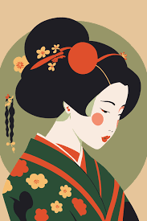
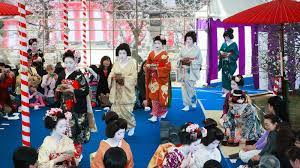
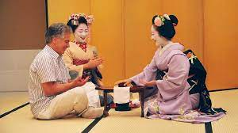
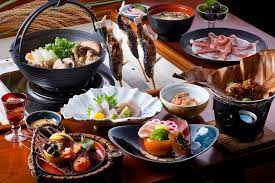

Japan has a rich, colorful culture dating back to the country's
prehistoric period known as the Jōmon period between 14,000 and 300 BCE.
The culture and traditions of Japan are unique because of its
island-nation geography as well as its isolation from the outside world
during the Tokugawa shogunate regime While its many traditions and
cultural landmarks persist, Japan is also one of the leading economic
and technological centres of the world. Ancient gods and traditional
customs sit side by side with cutting edge technologies and trendy pop
culture, and there is always something new to experience on a visit.
Geisha
They are traditional Japanese entertainers who act as hostesses during
meals, banquets and other occasions at high-quality Japanese-style
restaurants or Japanese hotels (ryokan) by performing classical
instruments and dances. A Maiko, also called Hangyoku (meaning
“half-jewel”), is an apprentice Geisha.



Balanced Cuisine
The traditional Japanese diet is naturally rich in various nutrients,
including fiber, calcium, potassium, magnesium, iron, and vitamins A, C,
and E ( 4 ). Vegetables contribute to the nutrient density of this diet
and are often cooked in dashi, a dried fish and sea vegetable based
stock. The traditional cuisine of Japan (Japanese: washoku) is based on
rice with miso soup and other dishes; there is an emphasis on seasonal
ingredients. Side dishes often consist of fish, pickled vegetables, and
vegetables cooked in broth. Seafood is common, often grilled, but also
served raw as sashimi or in sushi. A Meal Should Include All Five
Tastes: In addition to bitter, sour, salt, and sweet, Japan rounds off
their list of five taste sensations with umami, which translates roughly
to “savory”

Anime and Manga
Manga refers to all comics of Japanese origin. Anime can be thought of
as manga's onscreen counterpart. Themes of manga and anime include
romance, action adventure, science fiction. Some of the more popular
manga and anime series are AstroBoy, Doraemon, Dragon Ball and Spirited
Away. Manga and anime are not just literature creations or television
broadcasts. They represent the culture of an entire country; they are
Japan's window to the world. Through them, cultural aspects of the land
of the rising sun, such as gastronomy or language, are reflected.